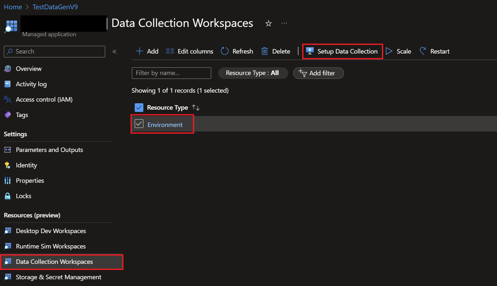

Data Generation On Azure¶
This document serves as a guide to run the data generation module scripts on a scalable Azure infrastructure that allows the data gen job to be parallelized across multiple AKS instances. This functionality is integrated into the Project Airsim (PAS) Managed App and can be easily configured through the same.
Prerequisites¶
The following pieces are required for you to successfully run the data generation module on Azure:
An Azure subscription with access to the PAS Azure Offering
A PAS Managed App deployment on your Azure subscription
A blob container inside a storage account on your Azure subscription
Configured Data Generation PAS client script and subsequent data generation/scene and robot configs. Please refer to the Data Generation document for more information on how to configure these scripts and configs.
This guide will walk you through the following steps:
Upload Data¶
An Upload Script is provided to help you upload the data to the blob container. This script would be run from your local machine. The script requires the following parameters to be passed in:
--sas-url: SAS-URL of the blob container. Please provideRead,Write,List,Create, andAddpermissions to the URL.--config-dir: Directory that holdsdatacollector_config.jsoncand the scene/robot configs. The structure of the directory should be as follows:config-dir ├── datacollector_config.jsonc ├── sim_config │ ├── scene_config.jsonc │ ├── robot_config.jsonc ├── schemas │ ├── datacollector_config_schema.jsonc
A sample config directory is provided here.
--script: Path to the PAS client script.basic_datacollection_azure.pyis provided as a sample script.--asset-dir: Directory that holds the assets to be used during the data gen job.--pas-whl: Path to the PAS client.whlfile
Configure Job¶
Once the data is uploaded to the blob container, you can configure the data generation job on the PAS Managed App. Follow the steps below to configure the job:
Navigate to the
Data Collection Workspacestab on the PAS Managed App and click onSetup Data Collection. Provide the relevant information in the subsequent tabs to point the downstream aks instances to the correct PAS binary and the data in your blob container.
Submit the job
Access Logs¶
You can access logs from all associated AKS instances to monitor the state of your data collection job. Follow the steps below to access the logs:
Go to the
Managed resource groupassociated to your managed app deployment.Select the AKS cluster
Navigate to the
Access Control (IAM)tab and click onAdd Role Assignment. Give yourself/any relevant entities theAzure Kubernetes Service RBAC Cluster AdminroleNavigate to the
Cluster Configurationtab and set the following values. You now have the required permissions to access the logs.Under the
Workloadstab, select theStateful Setstab. Here, select `airsimvnext-dc-stateful-set’Click on
Live Logsto access the logs from the AKS instances.